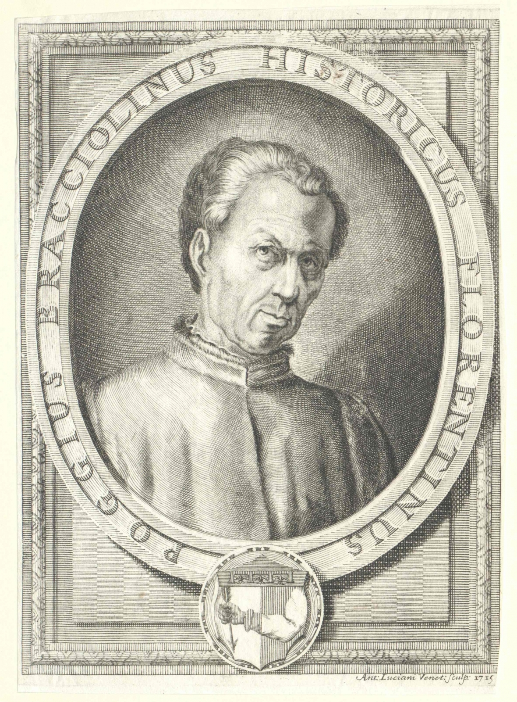

Early in the 15th century Poggio Bracciolini,
a Humanist scribe who worked for the pope, established a style of writing that laid the groundwork for the first roman typefaces. This style was based on letterforms that had already been obsolete for over a hundred years. They were revived by the Italian Humanists because the manuscripts that contained the Roman literature they so coveted were written in them.The story becomes rich and complex as the century wears on and a fad for finding, observing and recording ancient Roman inscriptions has an important role. Ultimately the designers of the first roman typefaces did not merely copy manuscript forms. They made important design decisions that have effected our letterforms up to the present day.